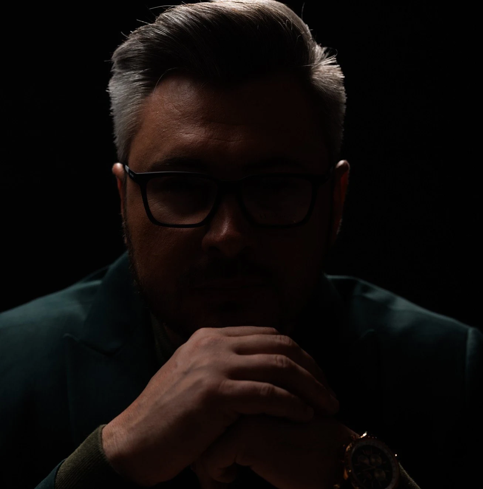
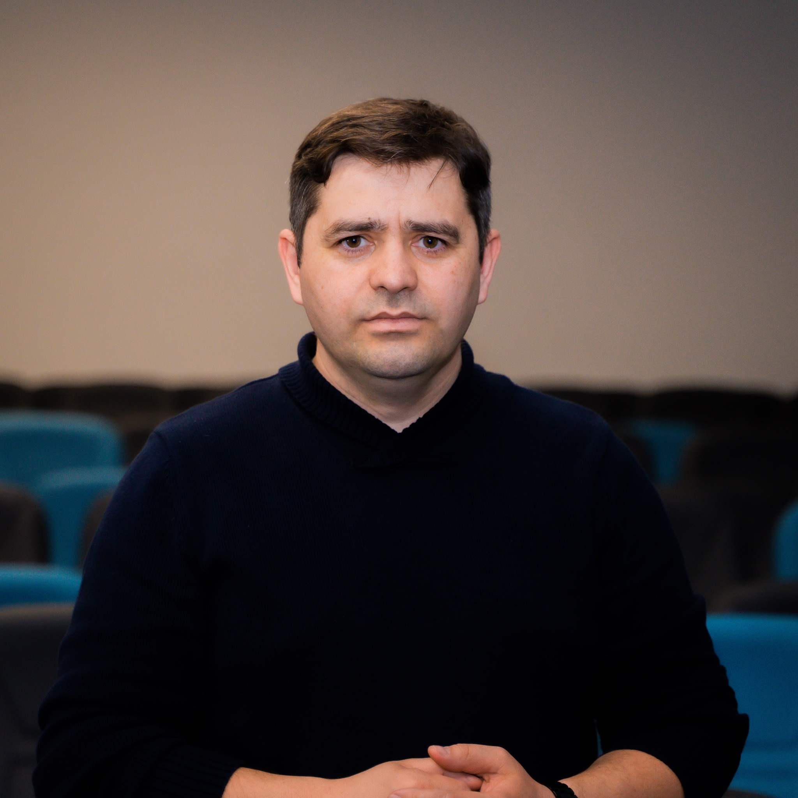
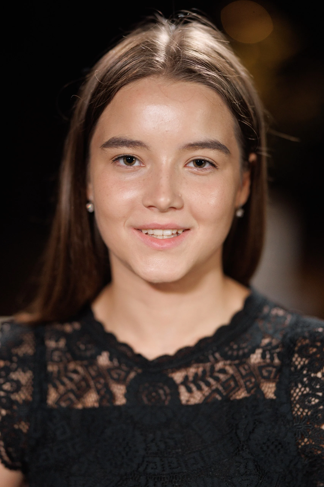
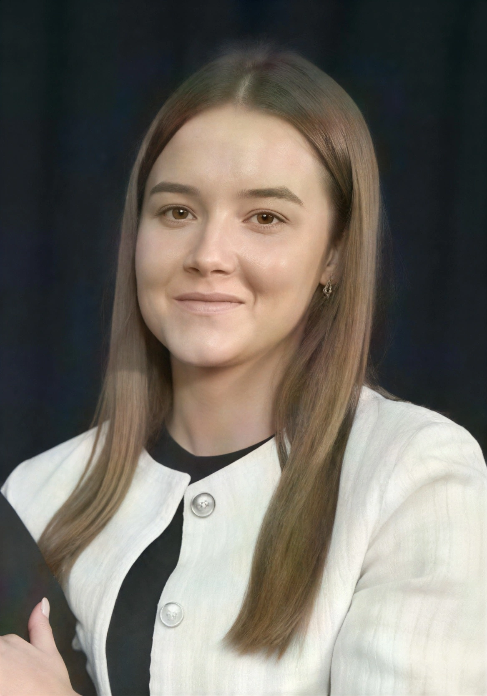
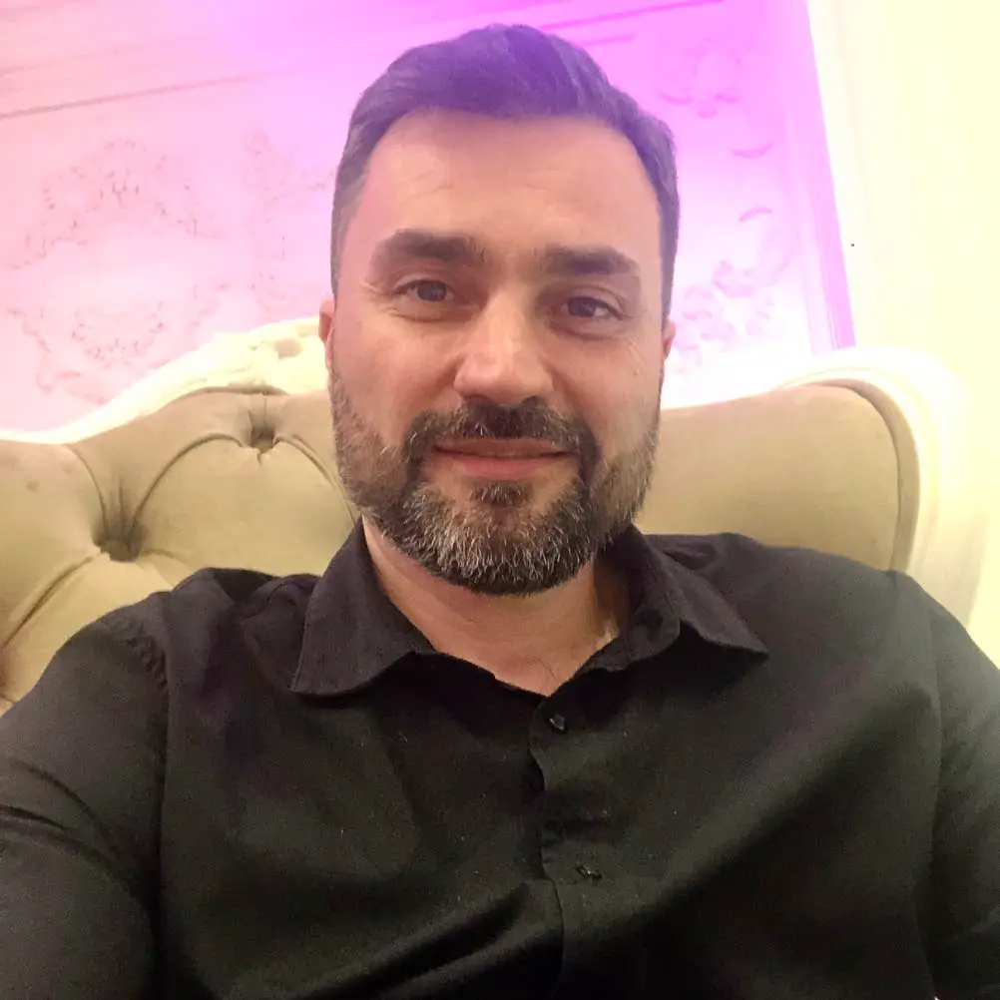
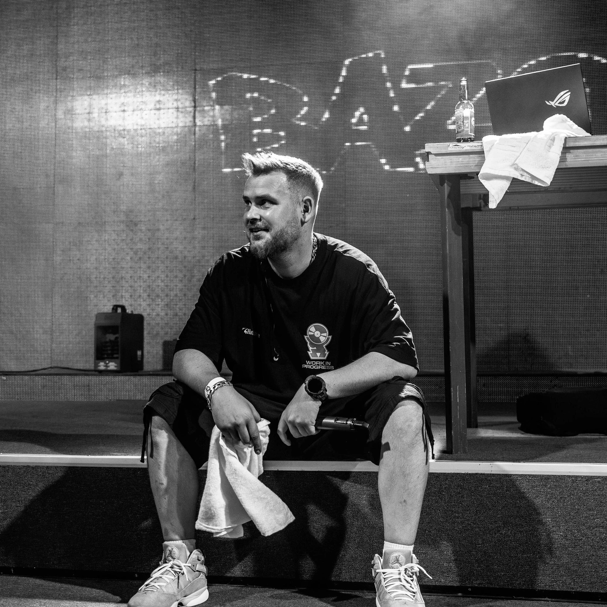
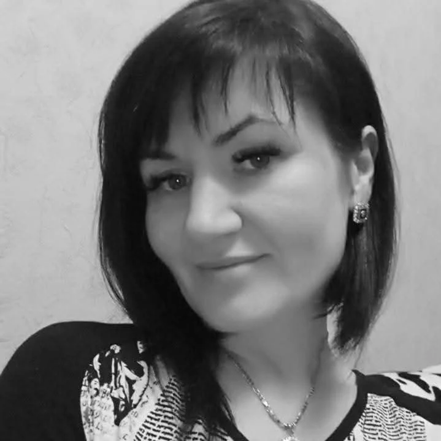

Misiune clară
Sprijin pentru părinți și profesori prin instrumente practice, clare și aplicabile în viața de zi cu zi.
Educheia cu Elena Vorotneac este un podcast pentru părinți și cadrele didactice, ce oferă soluții practice care pot fi aplicate atât acasă, cât și la clasă.
Sprijin pentru părinți și profesori prin instrumente practice, clare și aplicabile în viața de zi cu zi.
O platformă de dialog constructiv cu experți din educație, psihologie, leadership și sănătate.
De la ideea născută în 2023 în Munții Caucazului, la lansarea primului episod pe 11 septembrie 2025.

Gazda podcastului
Elena Vorotneac este mentor și formator național, facilitator internațional TBRI®, profesoară de limba și literatura română cu grad didactic superior.
Creatoare de proiecte educaționale și culturale, prezentatoarea podcastului „Educheia” și coordonatoarea platformei de Facebook cu același nume. Fondatoarea AO „ATU”, colaboratoare a ziarului pedagogic „Făclia”, nominalizată cu titlul Pedagogul Anului 2022 și distinsă cu „Curaj civic pentru educație” oferită de Casa Regală din România.
Echipa

Producător
Compania „VisArion Studio” SRL

Director de imagine
Oleg Groian

Asistent logistică
Laura Țurcan

Asistent logistică
Polina Melniciuc

Asistent regie
Andrei Aparatu

Inginer de sunet
Vlad Milea

MUAH
Elena Anghel
Proiect realizat de AO „ATU” și Educheia.
Misiune
Misiunea podcastului Educheia este de a sprijini cadrele didactice și părinții cu instrumente practice, clare și aplicabile, care să îmbunătățească relația adult-copil și calitatea procesului educațional.
Având o abordare holistică, prin dialoguri autentice cu specialiști și prin valorificarea principiilor TBRI - conectare, împuternicire și corectare - Educheia contribuie la formarea unei culturi educaționale bazate pe înțelegere, responsabilitate și respect reciproc.
„Mulți vorbesc despre probleme, însă puțini vin cu soluții.”
— Crezul podcastului Educheia
Scurt istoric
La început a fost ideea. Podcastul Educheia cu Elena Vorotneac propune o abordare inovatoare a educației, centrată pe instrumente practice și răspunsuri aplicabile în viața reală.
Ideea s-a conturat și a prins formă în urma cursurilor practice la Școala de podcasting susținută de Școala de Jurnalism și DW Akademie.
Se trece la acțiune. Primul episod deschide un dialog cu specialiști din diverse domenii pentru a oferi soluții concrete părinților și cadrelor didactice.
„Educheia” continuă să aducă în prim-plan teme relevante pentru copii, părinți și profesori, prin conversații autentice și instrumente aplicabile.
Impact în cifre
0
episoade publicate
0
invitați în dialog
0
abonați YouTube
0
vizualizări totale
Direcții editoriale
Dialog, relație și încredere între adult și copil, în familie și în clasă.
Teme pentru acasă, tranziția la școală sau grădiniță și rutine funcționale.
Sprijin pentru orientarea copilului și pregătirea pentru viitoarea profesie.
Rolul AI în educație și folosirea responsabilă a tehnologiei în învățare.
Intervenții clare și respectuoase pentru comportamente dificile.
Perspective din psihologie, leadership, sănătate și educație aplicată.
Descoperă episoadele și urmărește activitatea comunității pe rețelele oficiale.